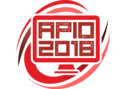
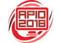

বাংলাদেশ ইনফরমেটিক্স অলিম্পিয়াড (বিডিওআই) স্কুল-কলেজের শিক্ষার্থীদের জন্যে একটি বাৎসরিক প্রতিযোগিতা। আন্তর্জাতিক ইনফরমেটিক্স অলিম্পিয়াড (আইওআই) এর সাথে মিল রেখে এটি আয়োজিত হয়ে থাকে। আইওআই বিশ্বব্যাপী সবচেয়ে গুরুত্বপূর্ণ হাই স্কুল ইনফরমেটিক্স (কম্পিউটার সায়েন্স) প্রতিয়োগিতা। শিক্ষার্থীরা প্রোগ্রাম লিখে বিভিন্ন চ্যালেঞ্জিং সমস্যার সমাধান করে থাকে। প্রতিযোগিতার সমস্যাগুলো অ্যালগরিদমিক হয়ে থাকে; যদিও প্রতিযোগিদের সমস্যা বিশ্লেষণ, প্রয়োজনীয় অ্যালগরিদম পরিকল্পনা, ডাটা স্ট্র্যাকচার, প্রোগ্রামিং, সমাধান যাচাই করার কিছু মৌলিক দক্ষতা দেখাতে হয়। আইওআই এর বিজয়ীরা সন্দেহাতীতভাবে পৃথিবীর সেরা তরুণ কম্পিউটার বিজ্ঞানী।
প্রথমবার আইওআই অনুষ্ঠিত হয় বুলগেরিয়াতে ১৯৮৯ সালে। জাতিসংঘ শিক্ষা, বিজ্ঞান ও সংস্কৃতি সংস্থা (ইউনেস্কো) এটির প্রস্তাব দেয়। আইওআই আটটি আন্তর্জাতিক বিজ্ঞান অলিম্পিয়াডের মধ্যে একটি। বাকি সাতটি হচ্ছে গণিত আইঅ্যামও (১৯৫৯ থেকে), পদার্থবিজ্ঞান আইপিএইচও (১৯৬৭ থেকে), রসায়ন আইসিএইচও (১৯৬৮ থেকে), জীববিজ্ঞান আইবিও (১৯৯০ থেকে), জ্যোতির্বিদ্যা আইএও (১৯৯৬ থেকে), ভূগোল আইজিইও (১৯৯৬ থেকে), এবং আন্তর্জাতিক ভাষাতত্ত্ব অলিম্পিয়াড আইএলও (২০০৩ থেকে)। সবক’টি প্রতিযোগিতাই স্কুল-কলেজের শিক্ষার্থীদের জন্য উন্মুক্ত যাদের বয়স ২০ এর কম। প্রতিটি দেশ একটি অফিসিয়াল প্রতিনিধিদল নিয়ে আইওআই’তে অংশগ্রহণ করে থাকে, যেখানে থাকে চারজন প্রতিযোগী (শিক্ষার্থী), একজন দলনেতা এবং একজন সহ দলনেতা। যাদের বয়স ২০ এর কম এবং যারা কলেজ কিংবা বিশ্ববিদ্যালয়ে ভর্তি হয়নি তারাই এই প্রতিযোগিতায় অংশগ্রহণের যোগ্য (বাংলাদেশের এইচএসসি শিক্ষার্থীরা আন্তর্জাতিক মানদন্ডে হাই স্কুলের শিক্ষার্থী এবং প্রতিযগিতায় অংশ নিতে পারবে)। ২০০৫ সালে প্রথমবারের মত বিডিওআই অনুষ্ঠিত হয়েছিল।
আইওআই এর লক্ষ্য হলো একত্রিত করা, চ্যালেঞ্জ দেয়া এবং পৃথিবীর তরুণ মেধাবী ইনফরমেটিক্স (কম্পিউটার সায়েন্স) - এ প্রতিভাধর শিক্ষার্থীদের পরিচিতি দেয়া এবং ভিন্ন সংস্কৃতিতে বেড়ে ওঠা শিক্ষার্থীদের মাঝে মেলবন্ধন তৈরি করা। বাংলাদেশের জাতীয় পর্যায়ে বিডিওআই একই লক্ষ্য অনুসরণ করে থাকে। বিডিওআই এর বিন্যাসও আইওআই এর অনুরুপ।
বিডিওআই জাতীয় পর্যায়ে অনুষ্ঠিত হয়। বিডিওআই এর প্রতিযোগিদের একটি প্রিলিমিনারি রাউন্ডের মাধ্যমে বাছাই করা হয় যা একই সাথে বিভিন্ন বিভাগীয় জেলায় বিভিন্ন ভেন্যুতে অনুষ্ঠিত হবে। শিক্ষার্থীদের তাদের নিজ নিজ বিভাগীয় ভেন্যুতে শিক্ষা প্রতিষ্ঠানের পরিচয়পত্র নিয়ে উপস্থিত হতে হবে।
বিভাগীয় পর্যায়ের শীর্ষস্থানীয় ফলাফলধারীরা জাতীয় পর্যায়ে (বিডিওআই) অংশগ্রহণের সুযোগ পাবে।
সার্বিক সহযোগিতায়

আমাদের অ্যাফিলিয়েট
 
